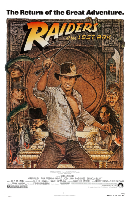
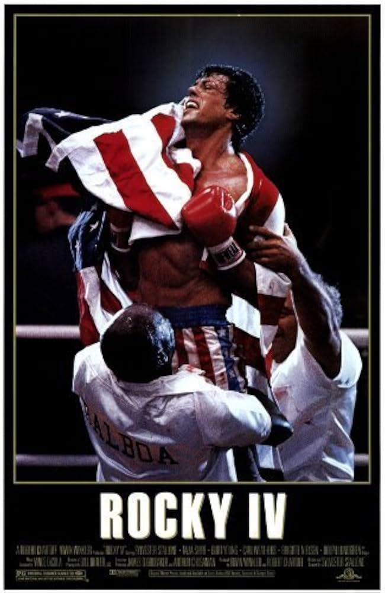
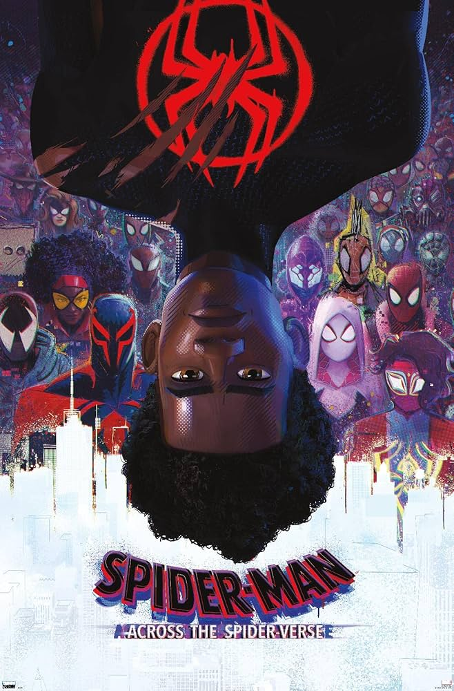
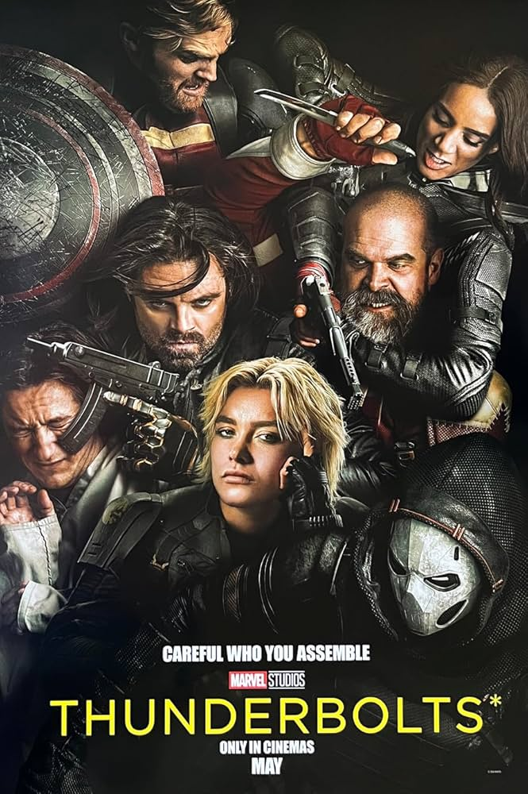
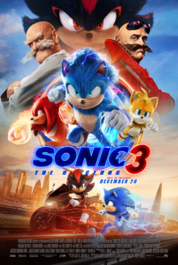
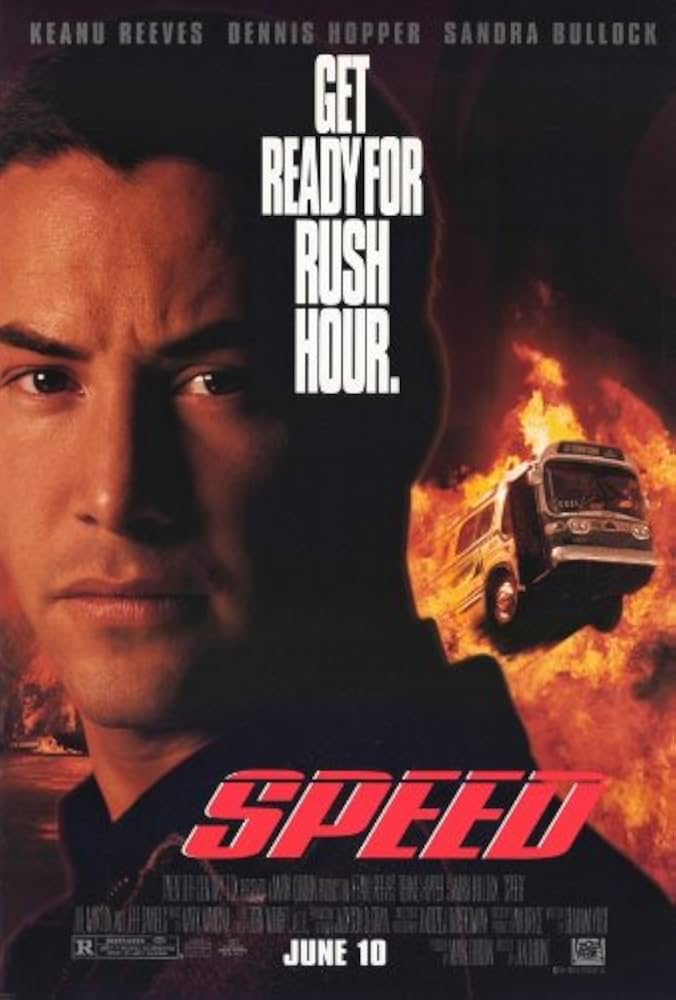
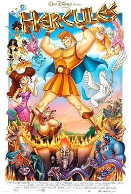
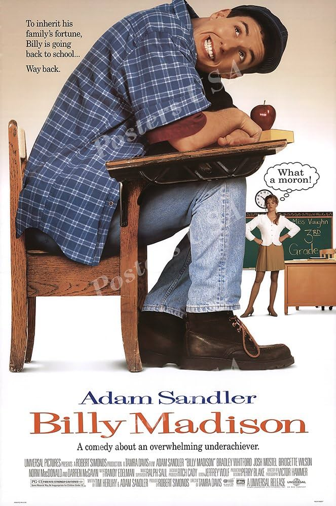
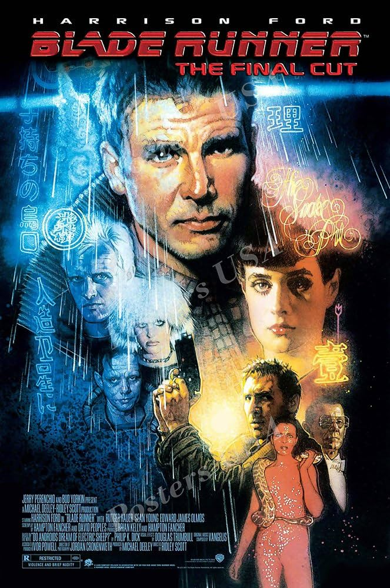
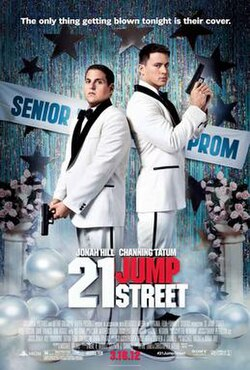

Raiders of the Lost Ark (1981)
The movie is about Indiana Jones, a globetrotting archaeologist vying with Nazi German forces to recover the long-lost Ark of the Covenant which is said to make an army invincible.

Rocky IV (1985)
The film is about how superstar Rocky Balboa confronts Ivan Drago, a Soviet boxer responsible for another personal tragedy in Balboa's life.

Spider-Man: Across the Spider-Verse (2023)
In the film, Miles goes on an adventure with Gwen Stacy / Spider-Woman across the multiverse, where he meets a team of Spider-People led by Miguel O'Hara / Spider-Man 2099 known as the Spider-Society, but comes into conflict with them over handling a new threat in the form of the Spot.

Thunderbolts (2025)
In the film, a group of antiheroes are caught in a deadly trap and forced to work together on a dangerous mission.

Sonic the Hedgehog 3 (2024)
In the film, Sonic, Tails, and Knuckles face Shadow the Hedgehog, who allies with the mad scientists Ivo and Gerald Robotnik to pursue revenge against humanity.

Speed (1994)
The plot centers on a city bus rigged by a vengeful extortionist Howard Payne to explode if its speed drops below 50 miles per hour (80 km/h). LAPD officer Jack Traven, who is tasked with preventing the disaster with a passenger who becomes unexpectedly involved in the mission.

The Iron Giant (1999)
Set during the Cold War in 1957, the film centers on a young boy named Hogarth Hughes, who discovers and befriends a giant robot of extraterrestrial origin. With the help of beatnik artist Dean McCoppin, Hogarth attempts to prevent the United States' military, who have been alerted by paranoid federal agent Kent Mansley, from finding and vanquishing the Giant.

Interstellar (2014)
Set in a dystopian future where Earth is suffering from catastrophic blight and famine, the film follows a group of astronauts who travel through a wormhole near Saturn in search of a new home for mankind.

Hercules (1997)
The film follows the titular Hercules, a demigod with super-strength raised among mortals, who must learn to become a true hero in order to earn back his godhood and place in Mount Olympus, while his evil uncle Hades plots his downfall.

Billy Madison (1995)
It tells the story of a wealthy but immature man named Billy Madison who must repeat grades 1 through 12 to prove himself worthy of inheriting his father's company.

Blade Runner (1982)
The film is set in a dystopian future Los Angeles of 2019, in which synthetic humans known as replicants are bio-engineered by the powerful Tyrell Corporation to work on space colonies. When a fugitive group of advanced replicants led by Roy Batty escapes back to Earth, former cop Rick Deckard reluctantly agrees to hunt them down.

21 Jump Street (2012)
In the film, police officers Schmidt and Jenko are forced to relive high school when they are assigned to prevent the outbreak of a new synthetic drug and arrest the supplier.